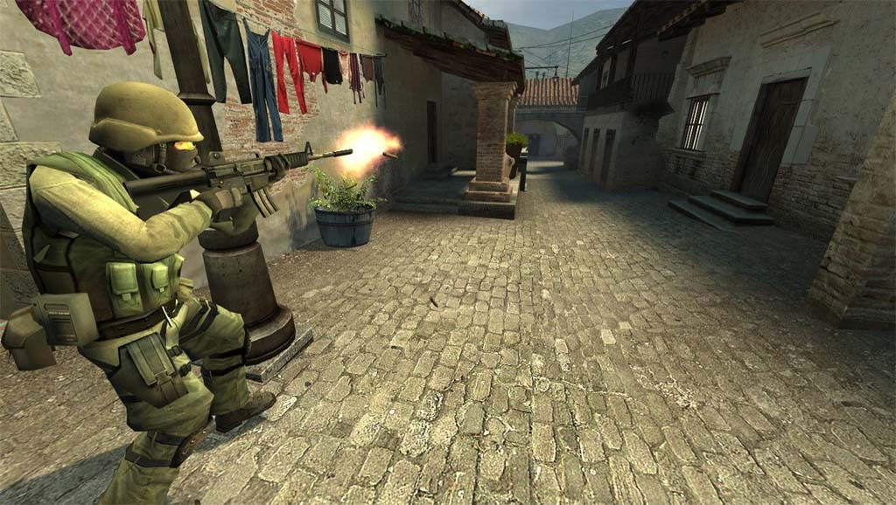
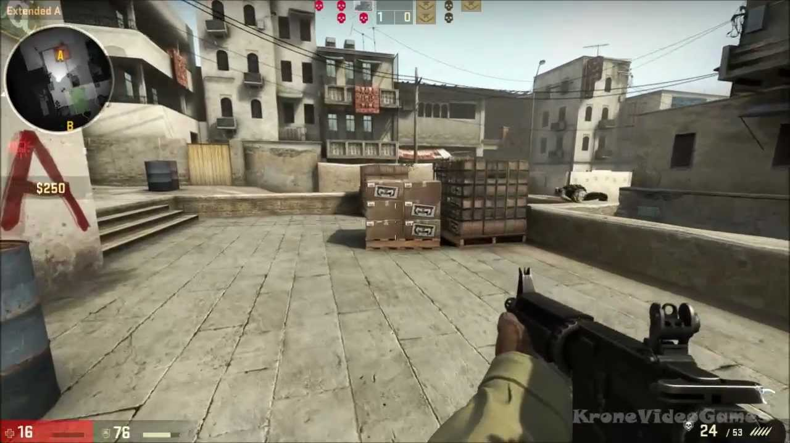

A Counter-Strike története
A Counter-Strike (röviden CS) a világ egyik legismertebb és legmeghatározóbb többjátékos FPS (First Person Shooter) játéka. Kezdetben 1999-ben indult, mint egy Half-Life módosítás, amelyet két fejlesztő, Minh „Gooseman” Le és Jess Cliffe készített.
A játék gyorsan népszerű lett a kompetitív közösség körében, és a Valve figyelmét is felkeltette. A cég végül felvásárolta a projektet, és hivatalosan is kiadta az első önálló változatát. A legismertebb és legtovább játszott verzió a Counter-Strike 1.6 volt, amely éveken át uralta az internetkávézókat és LAN-partikat világszerte.
2004-ben megjelent a Counter-Strike: Source, amely már a Source motorra épült. Bár grafikailag jelentős előrelépést jelentett, a versenyszerű játékosok körében megosztó fogadtatásban részesült. A Source nem tudta kiszorítani az 1.6-ot, amely még évekig megmaradt a profi színtéren.
A következő nagy lépés a Counter-Strike: Global Offensive (CS:GO) volt, amely 2012-ben jelent meg, és új korszakot nyitott a játék életében. A Valve aktívan támogatta az esport színteret, hivatalos major versenyeket szervezett, és rendszeresen frissítette a játékot. A CS:GO azóta is az egyik legnépszerűbb online FPS játék, több millió aktív játékossal.
2023-ban a Valve bejelentette a Counter-Strike 2-t, amely a Source 2 motorra épül, és modernizálja az egész élményt. A játék ingyenes frissítésként vált elérhetővé a CS:GO játékosok számára, új effektekkel, dinamikus füstökkel, javított tickrate-tel, és a régi pályák újragondolt változataival. Bővebben a legújabb verzióról a CS:2 oldalon olvashatsz.